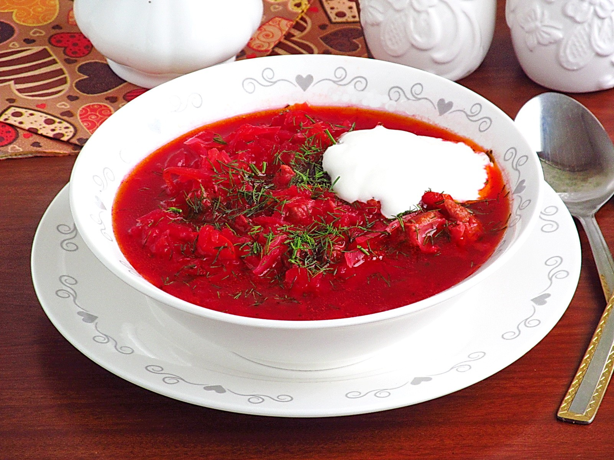

Borscht

Description
Borscht is a beet soup that originates from Ukraine and is common in Eastern Europe and North Asia. Depending on the recipe, borscht may be purely vegetarian; it may be served either hot or cold; and it may range from a hearty one-pot meal to a clear broth or a smooth drink.
- Prep time: 25 mins
- Cook time: 40 mins
- Servings: 10
Ingredients
- 3 red beetroots
- 4 Tbsp extra virgin olive oil
- 8 cups chicken broth + 2 cups water
- 3 yukon potatoes
- 2 carrots
- 2 celery ribs
- 1 onion
- 4 Tbsp ketchup or 3 Tbsp tomato sauce
Steps
- Peel, grate and/or slice all vegetables (keeping sliced potatoes in cold water to prevent browning until ready to use then drain).
- Heat a large soup pot (5 1/2 Qt or larger) over medium/high heat and add 2 Tbsp olive oil.
- Add grated beets and sauté 10 minutes, stirring occasionally until beets are softened.
- Add 8 cups broth and 2 cups water.
- Add sliced potatoes and sliced carrots then cook for 10-15 minutes or until easily pierced with a fork.
- While potatoes are cooking, place a large skillet over medium/high heat and add 2 Tbsp oil.
- Add chopped onion, celery and bell pepper. Saute stirring occasionally until softened and lightly golden (7-8 minutes).
- Add 4 Tbsp Ketchup and stir fry for 30 seconds then transfer to the soup pot to continue cooking with the potatoes.
- When potatoes and carrots reach desired softness, add optional ingredients from the list.
- Simmer for an additional 2-3 minutes and add more spices to taste.
- Serve with a dollop of sour cream on top.